| block 1 name | week 1 topic |
| week 2 topic | |
| week 3 topic | |
| week 4 topic | |
| week 5 topic | |
| block 2 name | week 7 topic |
| week 8 topic | |
| week 9 topic | |
| week 10 topic | |
| week 11 topic |
Lines as Models
Data Analysis for Psychology in R 1
Josiah - josiah.king@ed.ac.uk
Psychology, PPLS
University of Edinburgh
Course Overview
| block 3 name | week 1 topic |
| week 2 topic | |
| week 3 topic | |
| week 4 topic | |
| week 5 topic | |
| block 4 name | week 7 topic |
| week 8 topic | |
| week 9 topic | |
| week 10 topic | |
| week 11 topic |
This week
- A quick recap
- Lines lines lines!
- outcome = model + error
- Using models to answer questions
The story so far…
Block 1 - Exploratory Data Analysis
- We were “Exploratory” because we weren’t yet talking about research questions or hypotheses.
- More generally, think “how to summarise/visualise distributions”
- mean/median/mode
- variance/standard deviation
- counts/frequencies/proportions
<<< All things we can use to specify questions!
| Has the average body temperature of healthy humans changed from the long-thought 37 °C? | mean \(\neq\) 37? |
| Are first year undergraduate students more optimistic than adults in general? | mean > 35? |
| Do people with happy relationships have lower cortisol than people in unhappy ones? | \(\text{mean}_\text{Happy} < \text{mean}_\text{Unhappy}\) |
| Do ASD and ADHD co-occur in children more often than we would expect? | observed counts vs expected counts |
| Do students from higher-income families achieve higher scores on the reading comprehension section of the SAT (“SAT Verbal”)? | Does variance in incomes coincide with variance in SAT? |
Block 2 - Introduction to Inference

TODO ask UN for key 2/3 bullet summary
Block 3 - Common Statistical Tests
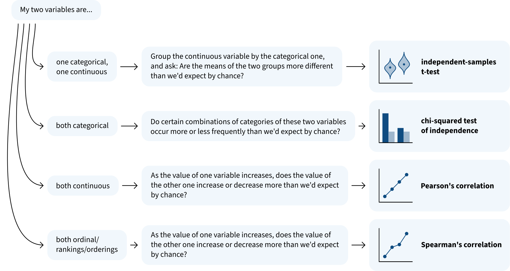
Lines
Correlation
If two variables are correlated, then as the value of one variable changes, the value of the other variable changes too.
Put differently: you can make a reasonable guess about the value of one variable based on the value of the other one.
Not correlated:
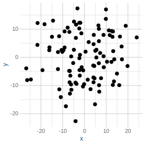
For any given value of x, you can’t really predict what kind of value y is likely to have.
Positively correlated:
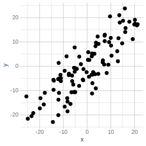
If x increases, then y increases.
If x decreases, then y decreases.
Negatively correlated:
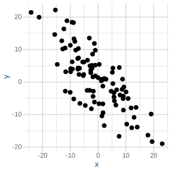
If x increases, then y decreases.
If x decreases, then y increases.
Correlation
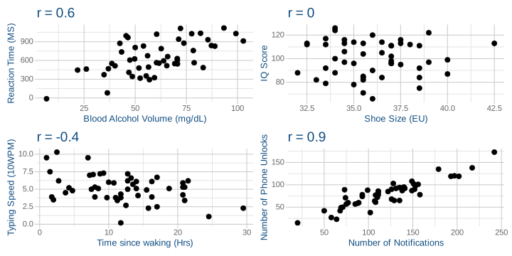
Correlation ++
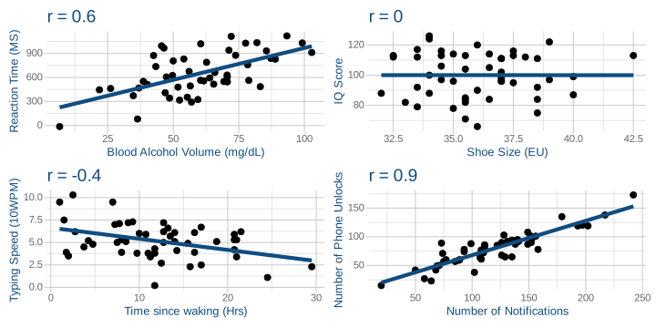
What defines a line?
viewof linearModel = {
const width = 580;
const height = 320;
const margin = 50;
// init vals
let y1 = 20;
let y2 = 80;
const svg = d3.create("svg")
.attr("viewBox", [0, 0, width, height])
.style("border", "1px solid #ddd")
.style("background", "#fafafa");
// domains. x is -2 to 10, y is 0 to 11
const xScale = d3.scaleLinear().domain([-2, 10]).range([margin, width - margin]);
const yScale = d3.scaleLinear().domain([0, 100]).range([height - margin, margin]);
// axes
svg.append("g")
.attr("transform", `translate(0,${height - margin})`)
.call(d3.axisBottom(xScale).ticks(12));
svg.append("g")
.attr("transform", `translate(${xScale(0)},0)`)
.call(d3.axisLeft(yScale));
// make thicker line for dragging
const lineHitArea = svg.append("line")
.attr("stroke", "transparent")
.attr("stroke-width", 16)
.attr("cursor", "grab");
// make visible reg line
const line = svg.append("line")
.attr("x1", xScale(-2))
.attr("x2", xScale(10))
.attr("stroke", "#000000")
.attr("stroke-width", 3)
.attr("pointer-events", "none");
// add rise run triangle
const slopeHorizontal = svg.append("line")
.attr("stroke", "#0000FF")
.attr("stroke-width", 2)
.attr("stroke-dasharray", "4,4");
const slopeVertical = svg.append("line")
.attr("stroke", "#0000FF")
.attr("stroke-width", 2)
.attr("stroke-dasharray", "4,4");
// intercept
const interceptMarker = svg.append("circle")
.attr("r", 5)
.attr("fill", "#0000FF");
// intercept circle
const handleLeft = svg.append("circle")
.attr("r", 6)
.attr("fill", "#0000FF")
.attr("cursor", "ns-resize");
// right hand drag point. invisible
const handleRight = svg.append("circle")
.attr("r", 15)
.attr("fill", "transparent")
.attr("cursor", "ns-resize");
// LABELS!
const labelRun = svg.append("text")
.attr("fill", "#0000FF")
.attr("font-size", "13px")
.attr("font-weight", "bold")
.attr("text-anchor", "middle");
const labelRise = svg.append("text")
.attr("fill", "#0000FF")
.attr("font-size", "13px")
.attr("font-weight", "bold");
const interceptText = svg.append("text")
.attr("fill", "#0000FF")
.attr("font-size", "13px")
.attr("font-weight", "bold");
function update() {
const slope = (y2 - y1) / 10;
const intercept = y1;
// calculate line and extend to x=-2
const yNeg2 = y1 + slope * (-2);
// update line pos
line.attr("x1", xScale(-2)).attr("y1", yScale(yNeg2))
.attr("x2", xScale(10)).attr("y2", yScale(y2));
lineHitArea.attr("x1", xScale(-2)).attr("y1", yScale(yNeg2))
.attr("x2", xScale(10)).attr("y2", yScale(y2));
// update dragpoint
handleLeft.attr("cx", xScale(0)).attr("cy", yScale(y1));
handleRight.attr("cx", xScale(10)).attr("cy", yScale(y2));
// update annotation labels
interceptMarker.attr("cx", xScale(0)).attr("cy", yScale(y1));
interceptText
.attr("x", xScale(0) + 12)
.attr("y", yScale(y1) + 4)
.text(`${intercept.toFixed(2)}`);
// put rise run triangle 3-4
const xStart = 3;
const xEnd = 4;
const yStart = y1 + slope * xStart;
const yEnd = y1 + slope * xEnd;
slopeHorizontal
.attr("x1", xScale(xStart)).attr("y1", yScale(yStart))
.attr("x2", xScale(xEnd)).attr("y2", yScale(yStart));
slopeVertical
.attr("x1", xScale(xEnd)).attr("y1", yScale(yStart))
.attr("x2", xScale(xEnd)).attr("y2", yScale(yEnd));
labelRun
.attr("x", (xScale(xStart) + xScale(xEnd)) / 2)
.attr("y", yScale(yStart) + (slope >= 0 ? 14 : -6))
.text("+1");
labelRise
.attr("x", xScale(xEnd) + 6)
.attr("y", (yScale(yStart) + yScale(yEnd)) / 2 + 4)
.text(`${slope >= 0 ? "+" : ""}${slope.toFixed(2)} y`);
svg.node().value = { slope, intercept, y1, y2 };
svg.node().dispatchEvent(new CustomEvent("input"));
}
// listeners for drags
const dragLeft = d3.drag().on("drag", (event) => {
y1 = Math.max(0, Math.min(100, yScale.invert(event.y)));
update();
});
const dragRight = d3.drag().on("drag", (event) => {
y2 = Math.max(0, Math.min(100, yScale.invert(event.y)));
update();
});
let dragStartMouseY = 0;
let dragStartY1 = 0;
let dragStartY2 = 0;
const dragLine = d3.drag()
.on("start", (event) => {
dragStartMouseY = event.y;
dragStartY1 = y1;
dragStartY2 = y2;
lineHitArea.attr("cursor", "grabbing");
})
.on("drag", (event) => {
const deltaY = yScale.invert(event.y) - yScale.invert(dragStartMouseY);
let newY1 = dragStartY1 + deltaY;
let newY2 = dragStartY2 + deltaY;
if (newY1 < 0) {
newY2 -= newY1;
newY1 = 0;
} else if (newY1 > 100) {
newY2 -= (newY1 - 100);
newY1 = 100;
}
if (newY2 < 0) {
newY1 -= newY2;
newY2 = 0;
} else if (newY2 > 100) {
newY1 -= (newY2 - 100);
newY2 = 100;
}
y1 = newY1;
y2 = newY2;
update();
})
.on("end", () => {
lineHitArea.attr("cursor", "grab");
});
handleLeft.call(dragLeft);
handleRight.call(dragRight);
lineHitArea.call(dragLine);
update();
return svg.node();
}cor(x,y) == cor(y,x)
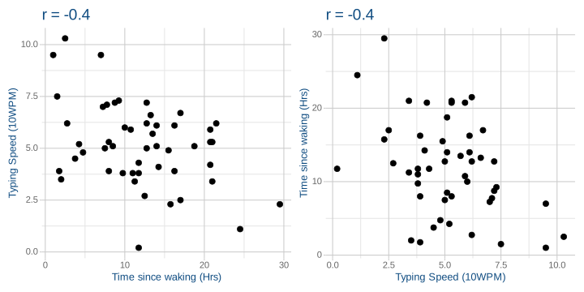
line for x and y != line for y and x
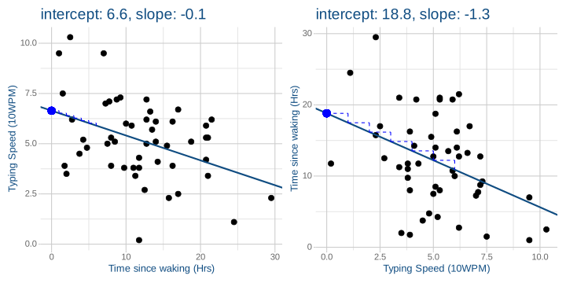
The move to modelling
A line
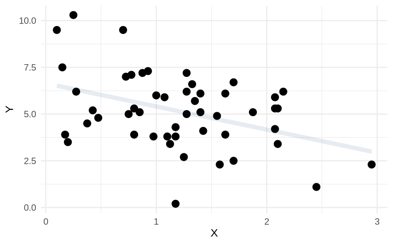
A line is a model of y
- We are moving to a framework in which we model an outcome as a function of a predictor
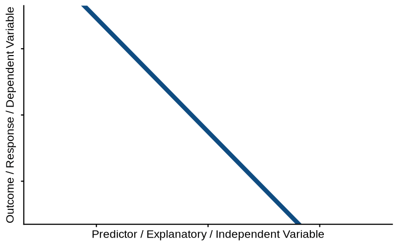
The only equation you’ll ever need
\[ \color{red}{\text{outcome}} = \color{blue}{\text{model}} + \color{black}{\text{error}} \]
^
The \(\text{error}\) is the bit that makes it a statistical model
ideally:
- \(\color{blue}{\text{model}}\) contains systematic patterns
- \(\color{black}{\text{error}}\) is just random leftover variation, unrelated to our model
The linear regression model
\[ \begin{align} \color{red}{\text{outcome}} &= \color{blue}{\text{model}} &+& \quad \quad \color{black}{\text{error}} \\ \quad \\ \quad \\ \quad \\ \color{red}{y} &= \color{blue}{\underset{\underset{\text{intercept}}{\uparrow}}{b_0} + \underset{\underset{\text{slope}}{\uparrow}}{b_1} \cdot x} & + & \quad \quad \color{black}{\epsilon} \end{align} \]
How do we find the line?
{
const container = d3.select("#regression-app");
container.html(""); // Clear container
// 1. Initial Data Generation (15 points)
const numPoints = 4, xScaleVal = 10, xShift = 5, yScaleVal = 10, yShift = 0;
const data = d3.range(numPoints).map(() => {
const xCoord = xShift + xScaleVal * d3.randomUniform()();
const yCoord = yShift + xCoord + yScaleVal * d3.randomUniform()();
return [xCoord, yCoord];
});
// 2. Controls Setup
const controls = container.append("div")
.style("display", "flex")
.style("gap", "20px")
.style("align-items", "center")
.style("margin-bottom", "10px")
.style("font-family", "sans-serif")
.style("font-size", "14px");
controls.append("span").style("font-weight", "bold").text("View:");
const radioGroup = controls.append("div").style("display", "flex").style("gap", "10px");
["None", "Absolute Error", "Squared Error"].forEach((mode, i) => {
const label = radioGroup.append("label").style("cursor", "pointer");
label.append("input")
.attr("type", "radio")
.attr("name", "errorMode")
.attr("value", mode)
.property("checked", i === 1);
label.append("span").text(" " + mode);
});
// Option A: Standard Reset (restores initial 15 points)
const resetBtn = controls.append("button")
.style("margin-left", "auto")
.style("padding", "4px 12px")
.style("cursor", "pointer")
.text("Reset");
// Option B: Clear All Button (uncomment if you want a complete clear)
// const clearBtn = controls.append("button")
// .style("padding", "4px 12px")
// .style("cursor", "pointer")
// .text("Clear All");
// 3. Main Plot Engine
function createRegressionPlot() {
const r = 6, marginTop = 20, marginRight = 30, marginBottom = 30, marginLeft = 40, inset = r * 2;
const width = 800, height = 450, showGrid = true;
const errorColor = d3.schemeSet3[3];
let errorLinesOpacity = 1, errorSquaresOpacity = 0, idCounter = 0;
let localData = data.map(d => ({ xCoord: d[0], yCoord: d[1], id: idCounter++ }));
const initData = localData.map(d => ({ ...d }));
const xDomain = [0, d3.max(localData, d => d.xCoord) + 5];
const yDomain = [0, d3.max(localData, d => d.yCoord) + 5];
const linearRegression = d3.regressionLinear().x(d => d.xCoord).y(d => d.yCoord).domain(xDomain);
const xScale = d3.scaleLinear().domain(xDomain).range([marginLeft + inset, width - marginRight - inset]);
const yScale = d3.scaleLinear().domain(yDomain).range([height - marginBottom - inset, marginTop + inset]);
const svg = container.append("svg")
.attr("width", width).attr("height", height)
.attr("viewBox", [0, 0, width, height]);
// Axes & Grid
const xGroup = svg.append("g").attr("transform", `translate(0,${height - marginBottom})`).call(d3.axisBottom(xScale).ticks(width / 80));
xGroup.select(".domain").remove();
xGroup.selectAll(".tick line").clone().attr("y2", marginTop + marginBottom - height)
.attr("stroke-opacity", d => (d === 0 ? 1 : showGrid ? 0.1 : 0));
const yGroup = svg.append("g").attr("transform", `translate(${marginLeft},0)`).call(d3.axisLeft(yScale).ticks(height / 80));
yGroup.select(".domain").remove();
yGroup.selectAll(".tick line").clone().attr("x2", width - marginLeft - marginRight)
.attr("stroke-opacity", d => (d === 0 ? 1 : showGrid ? 0.1 : 0));
let errorSquares = svg.append("g").selectAll("rect");
let errorLines = svg.append("g").selectAll("line");
let regressionLine = svg.append("g").attr("stroke", "black").attr("stroke-width", 2).selectAll("line");
// Click to add points
svg.append("rect").attr("width", width).attr("height", height).attr("opacity", 0)
.on("click", (event) => {
const [xm, ym] = d3.pointer(event);
localData.push({ xCoord: xScale.invert(xm), yCoord: yScale.invert(ym), id: idCounter++ });
update(localData);
});
let circles = svg.append("g").attr("fill", "black").selectAll("circle");
// Drag behavior
const drag = d3.drag().on("drag", function (event, d) {
d.xCoord = xScale.invert(event.x);
d.yCoord = yScale.invert(event.y);
d3.select(this).attr("cx", event.x).attr("cy", event.y);
update(localData, false);
});
function update(dataVal, transition = true) {
if (dataVal.length < 2) {
// Hide regression line and errors if fewer than 2 points exist
regressionLine.attr("opacity", 0);
errorLines.attr("opacity", 0);
errorSquares.attr("opacity", 0);
} else {
const regData = linearRegression(dataVal);
// Update Line
regressionLine = regressionLine.data([regData]).join("line").call(l => {
if (transition) l = l.transition();
l.attr("opacity", 1)
.attr("x1", d => xScale(d[0][0])).attr("x2", d => xScale(d[1][0]))
.attr("y1", d => yScale(d[0][1])).attr("y2", d => yScale(d[1][1]));
});
// Update Error Lines
errorLines = errorLines.data(dataVal, d => d.id).join(
enter => enter.append("line").attr("stroke", errorColor).attr("stroke-width", 2)
.attr("opacity", errorLinesOpacity)
.attr("x1", d => xScale(d.xCoord)).attr("y1", d => yScale(d.yCoord))
.attr("x2", d => xScale(d.xCoord)).attr("y2", d => yScale(d.yCoord))
.call(e => e.transition().attr("y2", d => yScale(regData.predict(d.xCoord)))),
update => update.call(u => {
if (transition) u = u.transition();
u.attr("opacity", errorLinesOpacity)
.attr("x1", d => xScale(d.xCoord)).attr("y1", d => yScale(d.yCoord))
.attr("x2", d => xScale(d.xCoord)).attr("y2", d => yScale(regData.predict(d.xCoord)));
}),
exit => exit.transition().attr("y2", d => yScale(d.yCoord)).remove()
);
// Update Error Squares
const computeHeight = d => Math.abs(yScale(regData.predict(d.xCoord)) - yScale(d.yCoord));
const computeTransform = d => `rotate(${yScale(regData.predict(d.xCoord)) - yScale(d.yCoord) < 0 ? -90 : 90}, ${xScale(d.xCoord)}, ${yScale(d.yCoord)})`;
errorSquares = errorSquares.data(dataVal, d => d.id).join(
enter => enter.append("rect").attr("fill", errorColor).attr("opacity", errorSquaresOpacity)
.attr("transform", computeTransform)
.attr("x", d => xScale(d.xCoord)).attr("y", d => yScale(d.yCoord))
.attr("width", 0).attr("height", 0)
.call(e => e.transition().attr("width", computeHeight).attr("height", computeHeight)),
update => update.call(u => {
u.attr("transform", computeTransform);
if (transition) u = u.transition();
u.attr("opacity", errorSquaresOpacity)
.attr("x", d => xScale(d.xCoord)).attr("y", d => yScale(d.yCoord))
.attr("width", computeHeight).attr("height", computeHeight);
}),
exit => exit.transition().attr("width", 0).attr("height", 0).remove()
);
}
// Update Points
circles = circles.data(dataVal, d => d.id).join(
enter => enter.append("circle")
.attr("cx", d => xScale(d.xCoord)).attr("cy", d => yScale(d.yCoord))
.attr("r", 0).call(drag)
.on("click", (event, dCurr) => {
if (event.defaultPrevented) return;
localData = localData.filter(d => d.id !== dCurr.id);
update(localData);
})
.call(e => e.transition().ease(d3.easeBackOut.overshoot(1.7)).attr("r", r)),
update => (transition ? update.transition() : update).attr("cx", d => xScale(d.xCoord)).attr("cy", d => yScale(d.yCoord)),
exit => exit.transition().ease(d3.easeBackIn.overshoot(1.7)).attr("r", 0).remove()
);
}
// Radio button listeners
controls.selectAll("input[name='errorMode']").on("change", function() {
if (this.value === "None") { errorLinesOpacity = 0; errorSquaresOpacity = 0; }
else if (this.value === "Absolute Error") { errorLinesOpacity = 1; errorSquaresOpacity = 0; }
else if (this.value === "Squared Error") { errorLinesOpacity = 0; errorSquaresOpacity = 0.5; }
update(localData, true);
});
// Reset button listener (Restores baseline 15 points)
resetBtn.on("click", () => {
localData = initData.map(d => ({ ...d }));
update(localData, true);
});
// Initial setup and entrance animation
update(localData.slice(0, 1));
const totalTime = 6000;
const ease = d3.easeQuadOut;
d3.range(1, data.length).forEach((i) => {
setTimeout(() => {
const [xCoord, yCoord] = data[i];
localData.push({ xCoord, yCoord, id: idCounter++ });
update(localData, true);
}, totalTime * ease(i / data.length));
});
}
createRegressionPlot();
}Activity break!
Using models to answer questions
Sometimes, models are useful
a correlation just describes a pattern.
- x varies along with y
- x varies in the opposite direction to y
but a linear model can be used
how?
- to make predictions and to estimate a quantity of interest!
Example
RQ: How does an additional night of interrupted sleep affect problem solving ability?
We recruit 80 people and randomly allocate them to receiving between 0 to 7 days of sleep disruption. Upon waking up after their final night of allocated disrupted sleep, participants were given a series of problems to solve. The number of problems and time taken were combined to create an overall score for each participant.
Example - as a correlation
Pearson's product-moment correlation
data: eg1sleep$n_disrupted and eg1sleep$psolve
t = -4, df = 78, p-value = 0.00003
alternative hypothesis: true correlation is not equal to 0
95 percent confidence interval:
-0.608 -0.254
sample estimates:
cor
-0.448 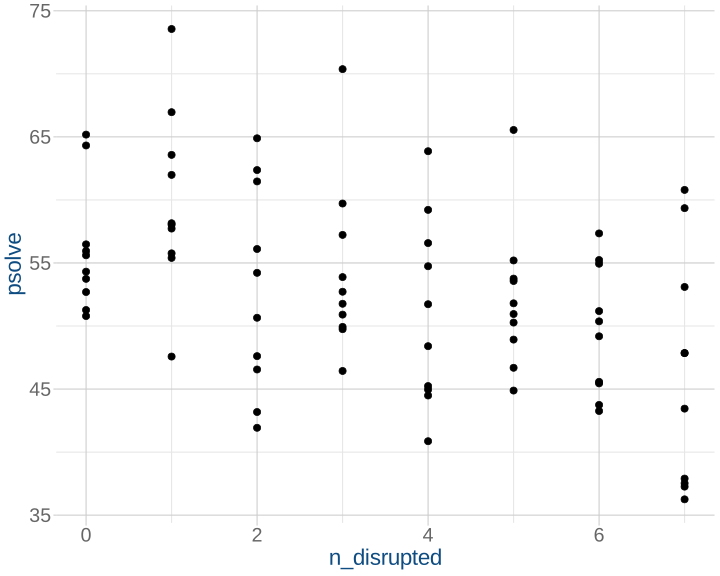
Example - as a model
The idea:
\[
\begin{align}
\color{red}{\text{outcome}} &= \color{blue}{\text{model}} + \color{black}{\text{error}} \\
\quad \\
\color{red}{y} &= \color{blue}{\underset{\underset{\text{intercept}}{\uparrow}}{b_0} + \underset{\underset{\text{slope}}{\uparrow}}{b_1} \cdot x} + \color{black}{\varepsilon}
\end{align}
\]
Our model:
\[
\begin{align}
\color{red}{\text{ProblemSolvingScore}} &= \,\,\,\color{blue}{b_0 \,\,\,+ b_1 \cdot \text{NightsDisrupted}} + \color{black}{\varepsilon} \\
\end{align}
\]
Our estimated model:
\[
\begin{align}
\color{red}{\text{ProblemSolvingScore}} &= \,\,\,\color{blue}{58 \,\,\,- 1.5 \cdot \text{NightsDisrupted}} + \color{black}{\varepsilon}
\end{align}
\]
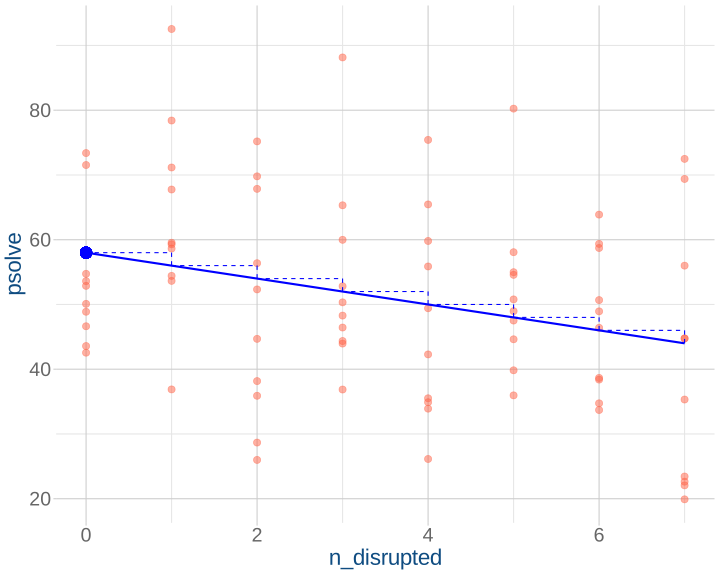
Example - quantity of interest
RQ: How does an additional night of interrupted sleep affect problem solving ability?
What happens to someone’s score when we disrupt their sleep for another night?
e.g., person \(i\):
\[ \text{Score}_i^{\text{nights disrupted}=x+1} - \text{Score}_i^{\text{nights disrupted}=x} \]
Example - Predictions
The idea:
\[
\begin{align}
\color{red}{\text{outcome}} &= \color{blue}{\text{model}} + \color{black}{\text{error}} \\
\quad \\
\color{red}{y} &= \color{blue}{\underset{\underset{\text{intercept}}{\uparrow}}{b_0} + \underset{\underset{\text{slope}}{\uparrow}}{b_1} \cdot x} + \color{black}{\varepsilon}
\end{align}
\]
Our model, for specific person \(i\):
\[
\begin{align}
\color{red}{\text{ProblemSolvingScore}_i} &= \,\,\,\color{blue}{b_0 \,\,\,+ b_1 \cdot \text{NightsDisrupted}_i} + \color{black}{\epsilon_i} \\
\end{align}
\]
Our estimated model, for specific person \(i\):
\[
\begin{align}
\color{red}{\text{ProblemSolvingScore}_i} &= \,\,\,\color{blue}{58 \,\,\,- 1.5 \cdot \text{NightsDisrupted}_i} + \color{black}{\epsilon_i}
\end{align}
\]
Our predicted value, for specific person \(i\):
\[
\begin{align}
\color{purple}{\widehat{\text{ProblemSolvingScore}}_i} &= \color{blue}{58 - 1.5 \cdot \text{NightsDisrupted}_i}
\end{align}
\]
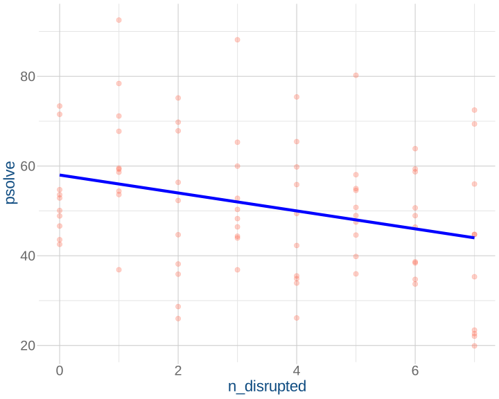
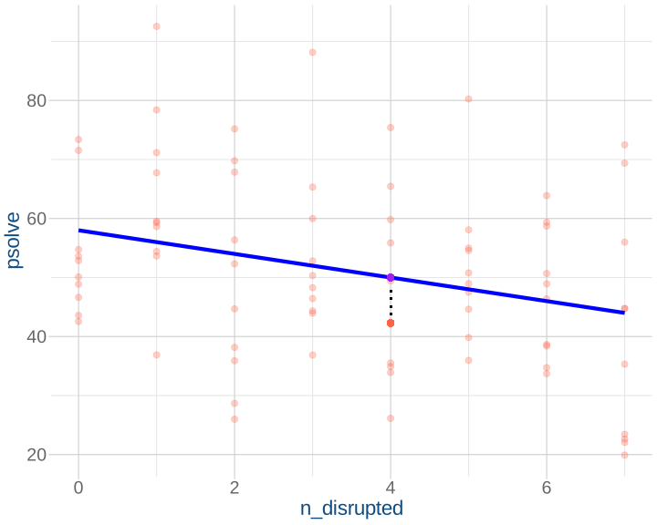
For this poor participant who had 4 nights of disrupted sleep, we predict their score to be:
\[
\begin{align}
&= \color{blue}{58 - 1.5 \cdot \text{NightsDisrupted}_i} \\
&= \color{blue}{58 - 1.5 \cdot 4} \\
&= \color{blue}{58 - 6} \\
&= \color{blue}{52} \\
\end{align}
\]
Example - Predictions (2)
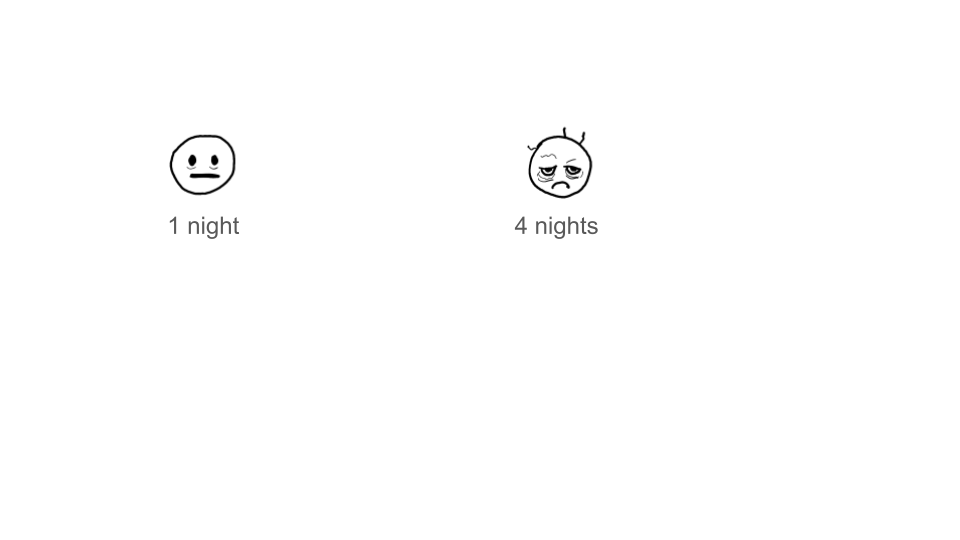
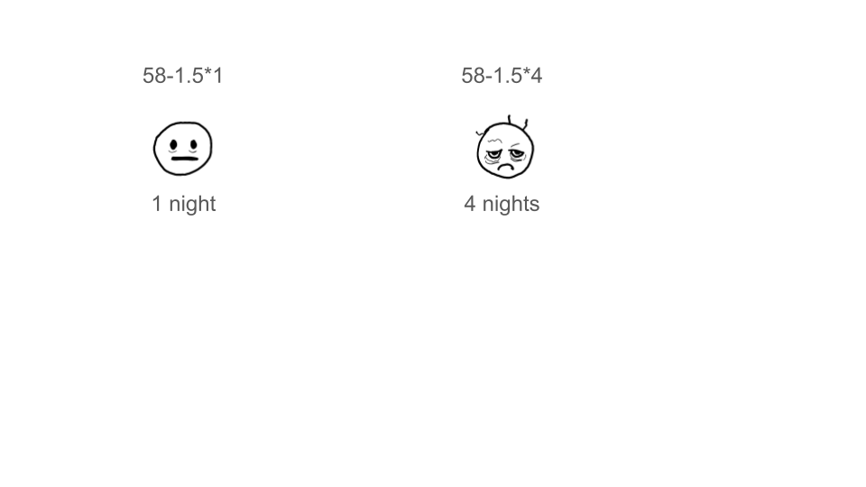
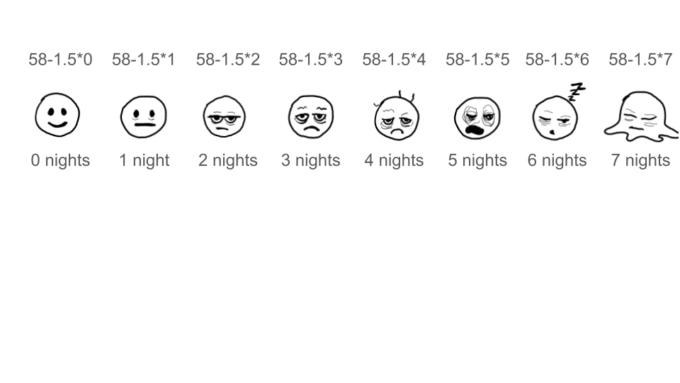
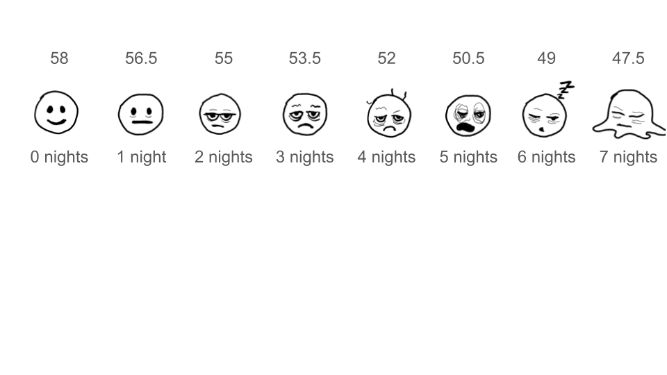
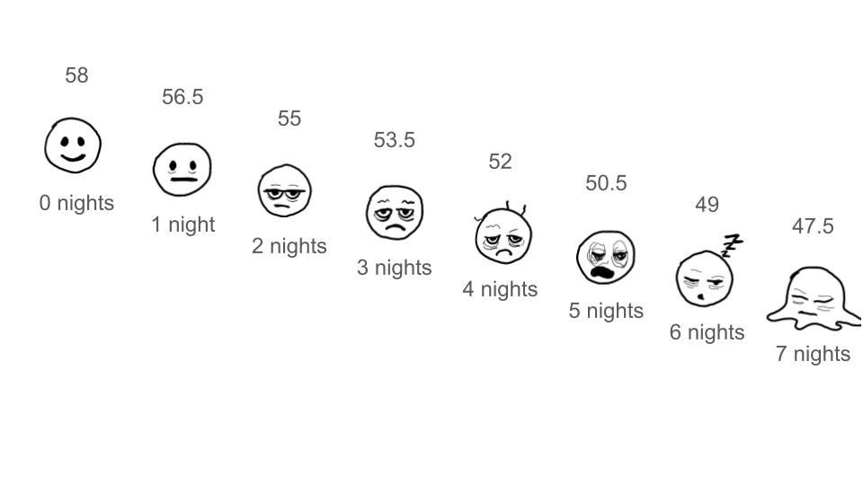
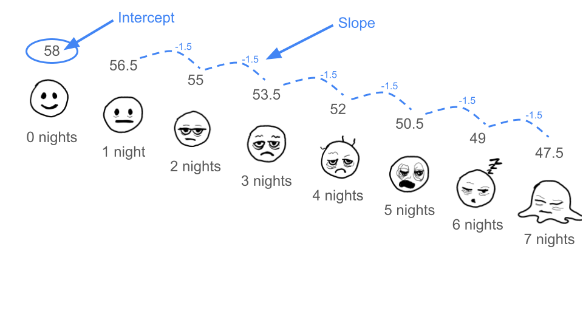
The How-to (in R)
a new function:
lm(......, data = datasetname)
L is for linear, M is for model
a new notation:
outcome ~ 1 + predictor
Read it as outcome “is predicted by” 1 intercept plus a slope across the predictor
You don’t have to include the 1 in the code, R will assume you want the starting point!
Example - in R
The data
The How-to - predictions
- make a new little dataframe for values of \(x\):
- get predictions of \(y\) for each value of \(x\):
End
Block 4 skills involved in this week’s lecture and/or workshop
- V5 I can visually estimate the parameters of a line from a plot.
- A7 I can use a fitted simple linear model to predict an outcome value for a given predictor value
- A8 I can appropriately interpret the parameters of a simple linear model.